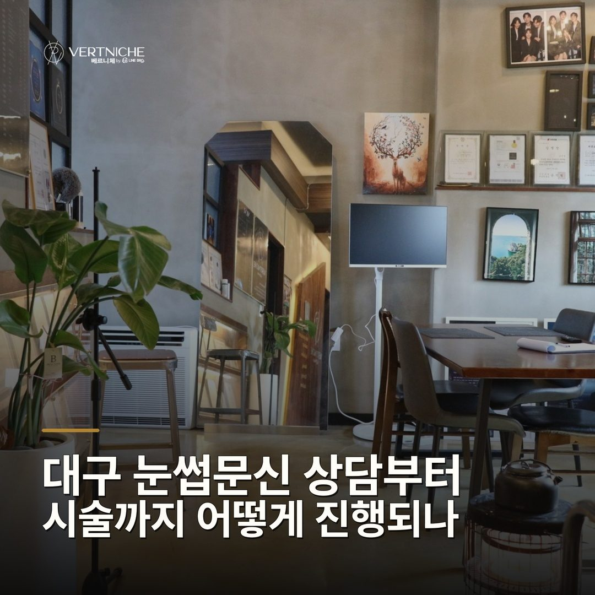
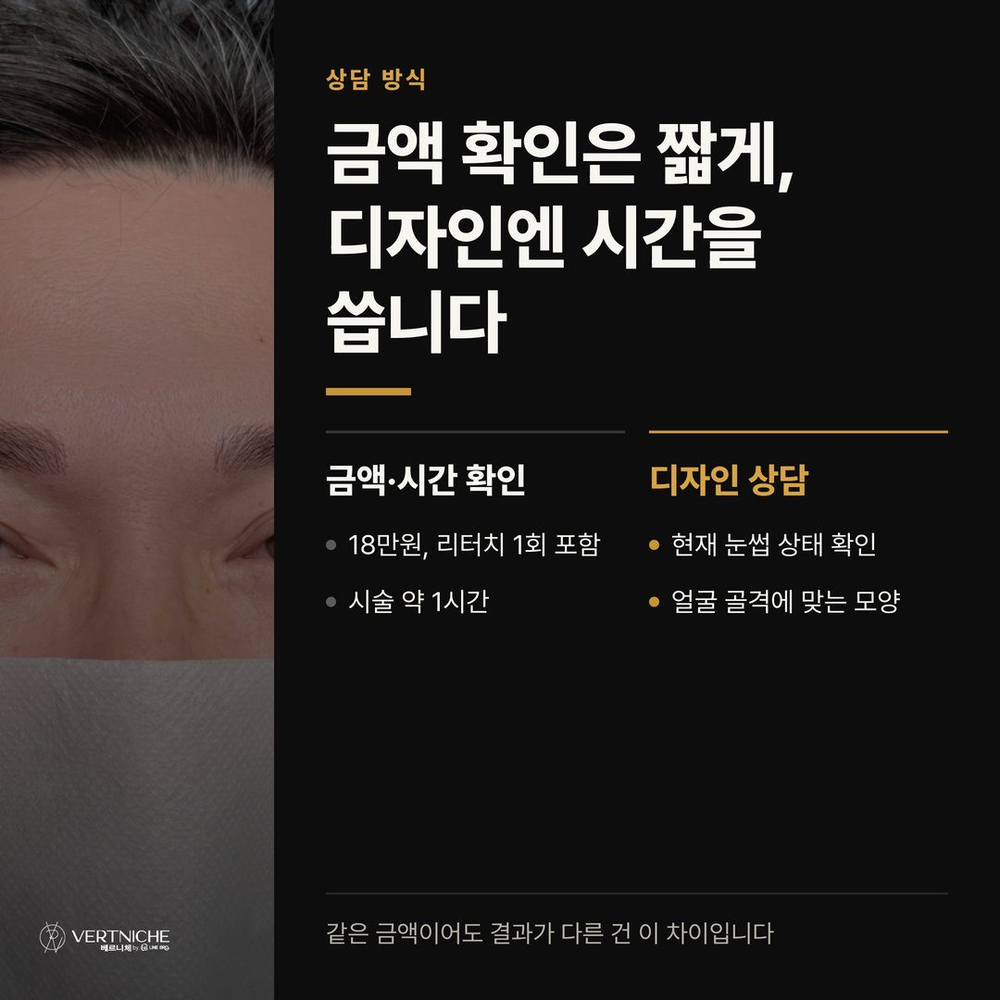
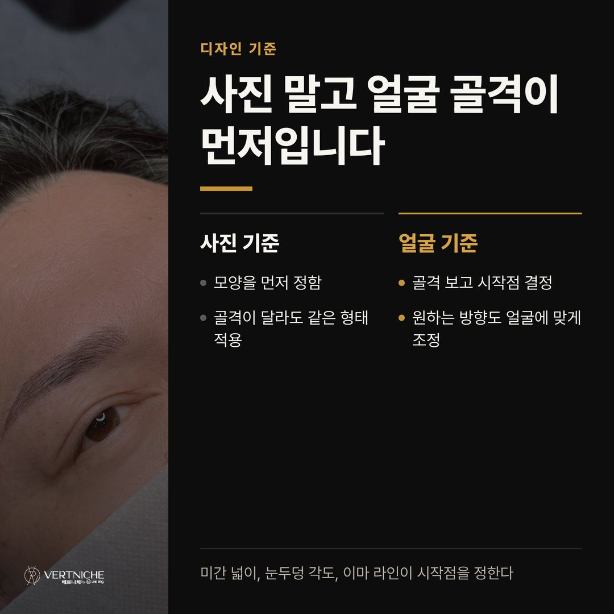
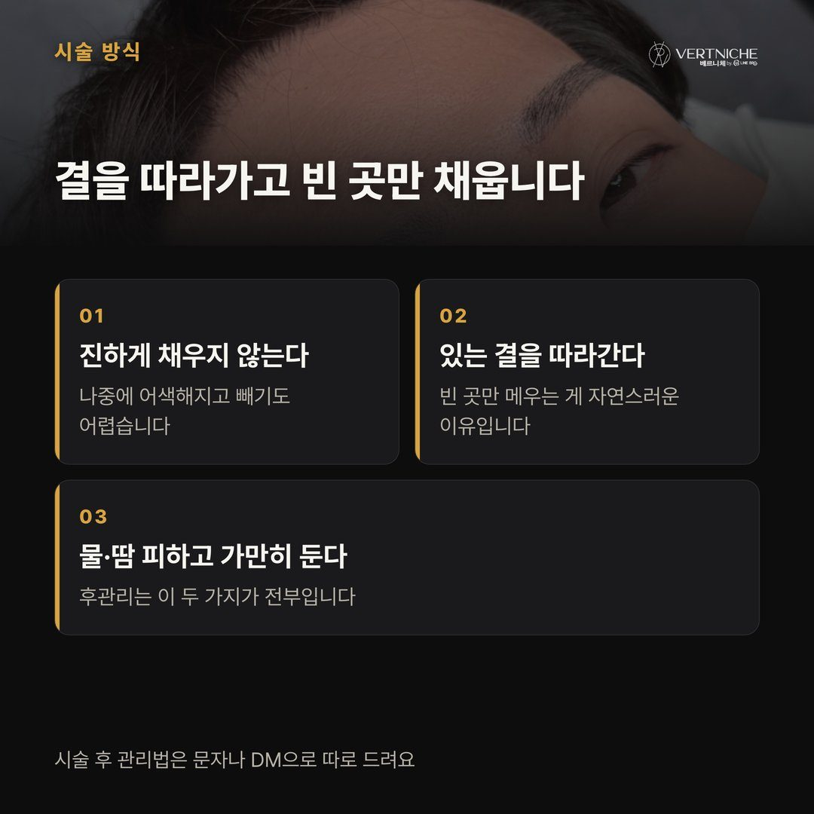
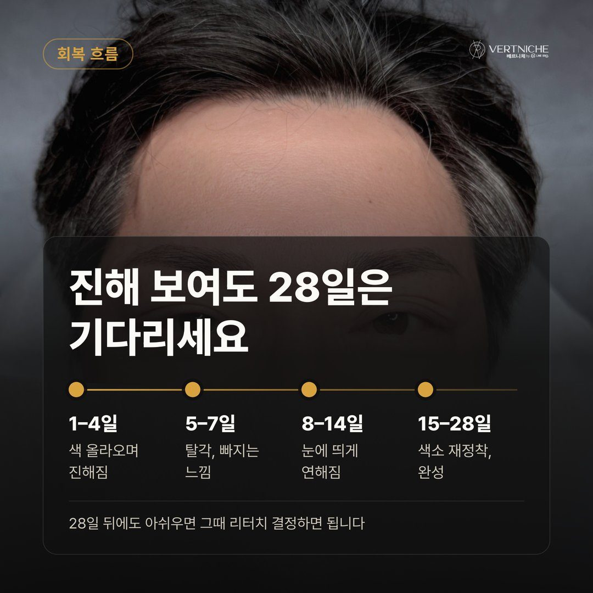
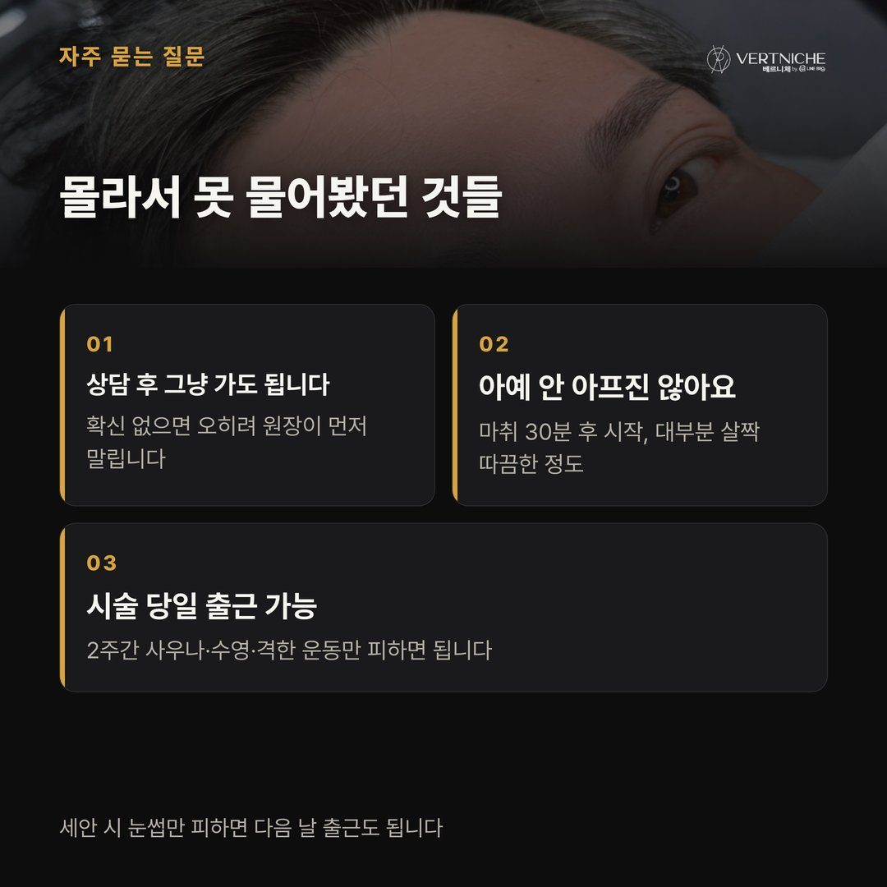
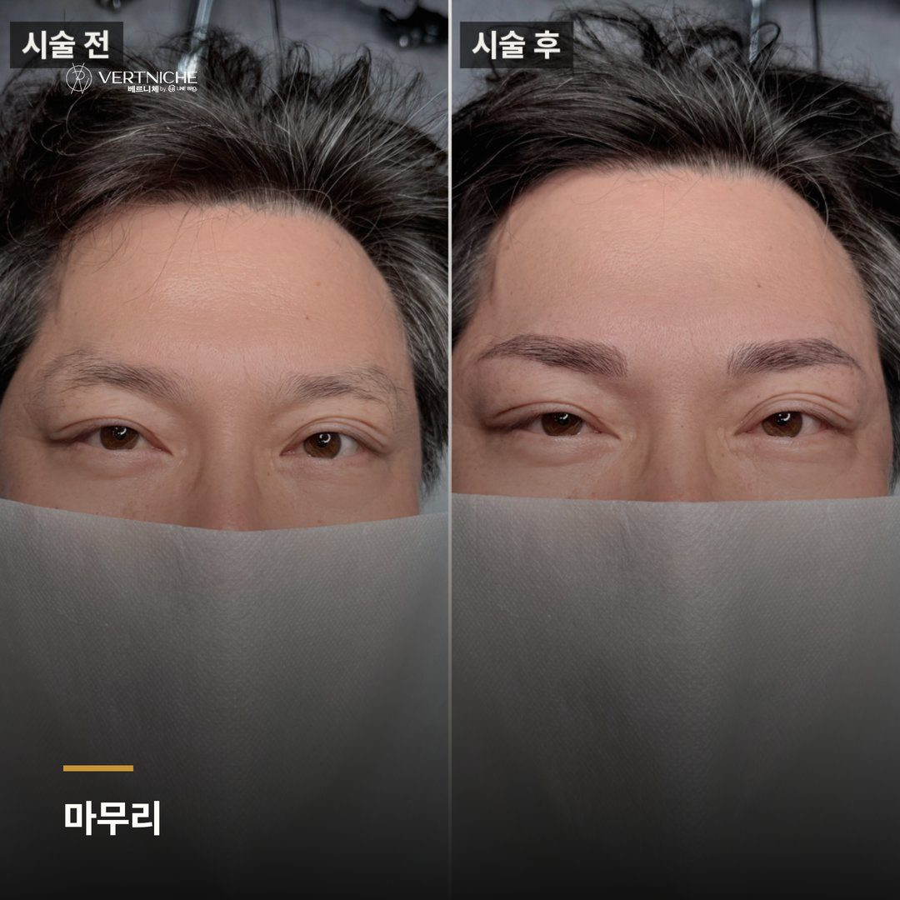
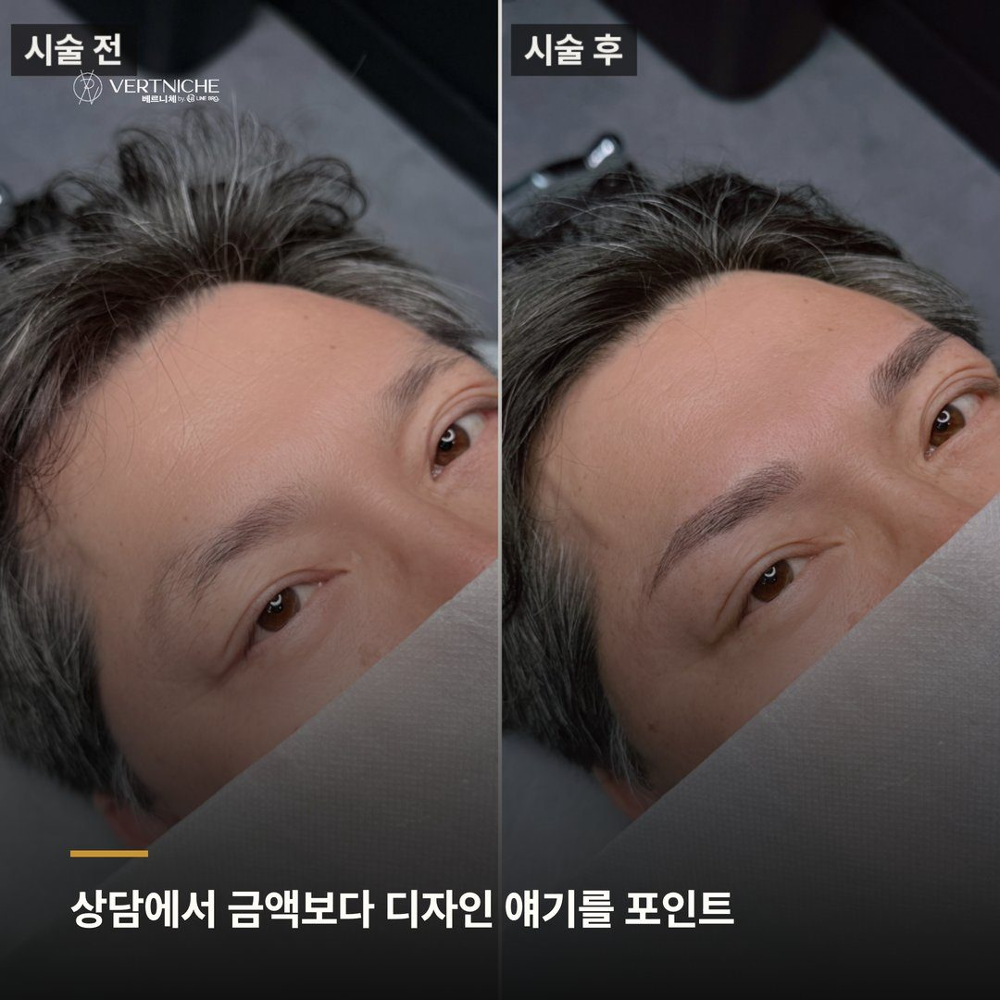
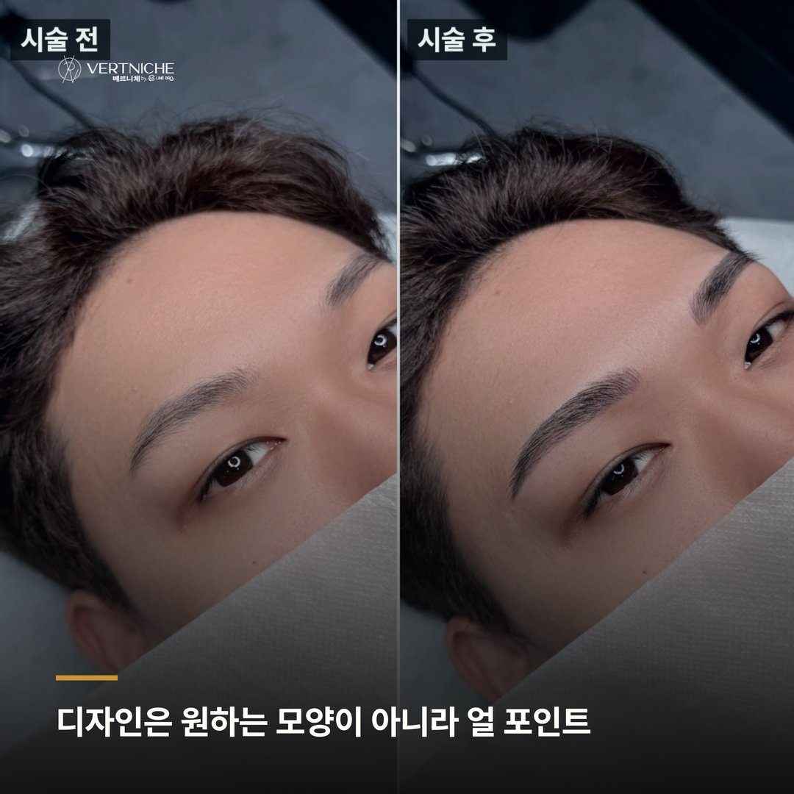
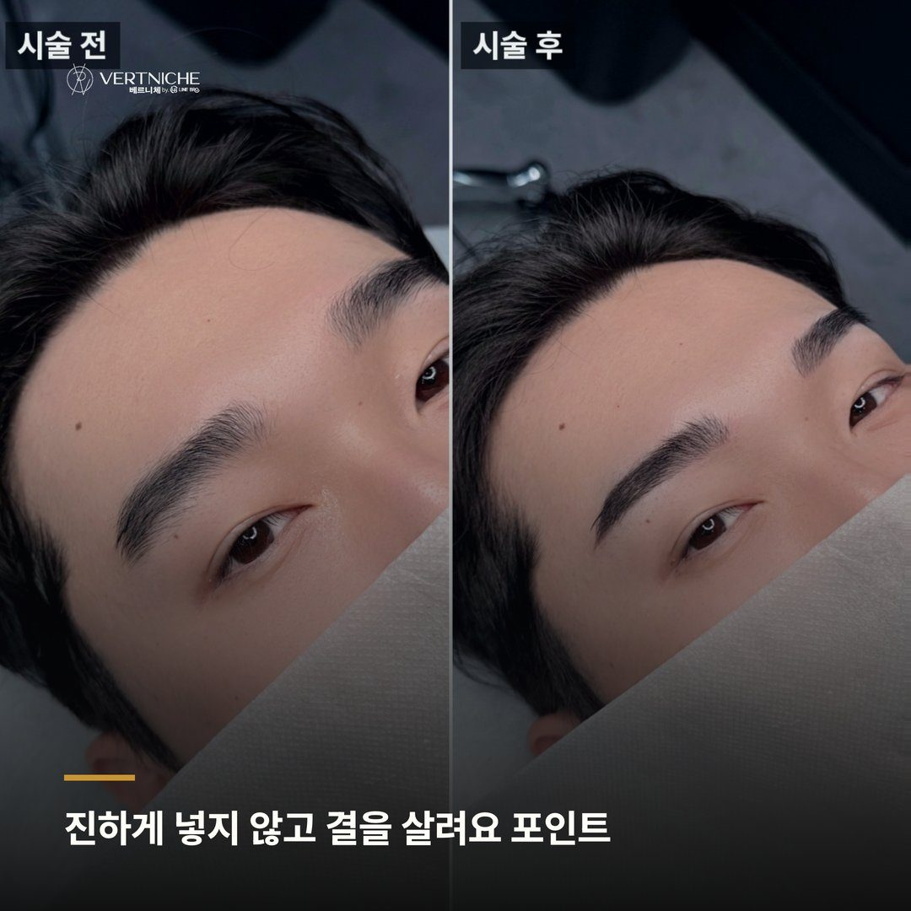

대구 눈썹문신 상담부터 시술까지 어떻게 진행되나

"원장님이 직접 다 봐주시는 거 맞죠?"
상담 오시는 분들이 꽤 자주 이걸 먼저 확인하세요. 아마 다른 곳에서 상담하는 사람 따로, 시술하는 사람 따로라는 얘기를 들으셨던 것 같아요.
베르니체는 상담부터 디자인, 시술까지 제가 다 봐요. 7년 동안 5,500명 넘게 케어하면서 느낀 건데, 얼굴을 처음 본 사람이 끝까지 가야 방향이 안 틀어지더라고요. 중간에 손이 바뀌면 상담에서 잡은 방향이 흐릿해지는 경우가 생겨요.
상담에서 금액보다 디자인 얘기를 먼저 해요
문의 주실 때 가장 많이 오는 질문은 두 가지예요. 얼마냐, 얼마나 걸리냐.
디자인은 원하는 모양보다 얼굴을 먼저 봐요
처음 오시는 분들은 대부분 사진을 들고 오세요. "이 모양으로요" 하고요.
남자 눈썹은 모양을 먼저 정하는 게 아니라 얼굴 골격을 먼저 봐야 해요. 미간 넓이, 눈두덩 각도, 이마 라인, 이런 게 눈썹의 시작점과 각도를 결정하거든요. 사진 속 그 사람이랑 골격이 다르면, 같은 모양을 얹어도 결과가 달라져요.
원하시는 방향과 얼굴이 요구하는 방향이 다를 때 저는 얼굴 쪽으로 조정하는 편이에요. 이 단계에서 결과의 절반이 정해져요. 펜으로 그려놓고 거울 같이 보면서 "여기 어떠세요" 하고 몇 번을 다시 잡는 게 그래서예요.
진하게 채우지 않고 결을 살려요
디자인이 정해지면 진정 크림 바르고 30분 기다린 뒤 시술에 들어가요.
여기서 제가 신경 쓰는 건 진하게 채우는 게 아니라 원래 결을 살리는 거예요. 진하게 넣으면 그 순간엔 또렷해 보여도 나중에 어색해지고, 무엇보다 빼기가 어려워요. 있는 눈썹 결을 따라가면서 빈 곳만 채우는 방식이에요.
진한 눈썹이 잘한 게 아니라 얼굴에 자연스럽게 얹힌 눈썹이 잘한 거라고 생각해요. 시술이 끝나면 후관리 방법을 문자나 DM으로 보내드려요. 물과 땀 조심하고 가만히 두는 게 핵심이에요.
시술 당일보다 28일 뒤가 진짜 결과예요
시술 끝나고 거울 보시면 생각보다 진하다고 느끼는 경우가 많아요. 근데 이건 당연한 과정이에요.
1~4일차는 색이 올라오면서 점점 진해 보이고, 5~7일차엔 탈각이 시작되면서 이번엔 너무 빠지는 것 같아 걱정하시거든요. 8~14일차는 오히려 연해 보여요. 15일이 지나면서 피부 속 색소가 다시 올라오고, 28일쯤 되면 기존 눈썹이랑 자연스럽게 어우러져요. 이 흐름을 미리 알고 가시면 중간에 당황하는 일이 줄어요.
28일 뒤에 아쉬운 부분이 있으면 리터치 받으시면 되고, 착색이 잘 됐으면 굳이 안 하셔도 돼요. 저는 잘 자리 잡았으면 안 하는 게 낫다고 봐요.
자주 물어보시는 것들
상담만 받고 결정 못 하면 그냥 가도 되나요? 네, 괜찮아요. 오늘 확신이 안 서시면 좀 더 생각해보시고 다시 오셔도 돼요. 디자인은 한번 들어가면 못 무르는 거라, 저도 확신 없는 상태로 시술 들어가는 걸 별로 안 좋아하거든요.
시술이 많이 아픈가요? 진정 크림을 30분 충분히 올린 뒤 시작하기 때문에 생각보다 견딜 만해요. 아예 안 아프다고는 못 하지만, 대부분 살짝 따끔한 정도라고 하세요.
직장 다니는데 당일 바로 출근해도 되나요? 가능해요. 다만 시술 후 2주 정도는 사우나, 수영, 땀 많이 흘리는 운동은 피하시는 게 좋아요. 세안할 때 눈썹만 조심하시면 일상생활엔 큰 지장 없어요.
포스팅 요약
• 디자인은 원하는 모양보다 골격 우선, 결을 살리는 방식으로 시술
• 시술 후 28일까지 색 변화가 있는 게 정상이고, 그 뒤 최종 결과 확인
궁금한 점은 아래 링크나 DM으로 편하게 문의해 주세요.
대구 눈썹문신 해외 거주 고객 리터치와 피부관리 기준
동성로 눈썹문신, 재방문 때 같은 디자인 유지되는 이유
눈썹문신후세안 언제부터 하는지 4주 회복 기준
시술 사진









이 글은 네이버 블로그에도 같은 내용으로 올라가 있습니다.